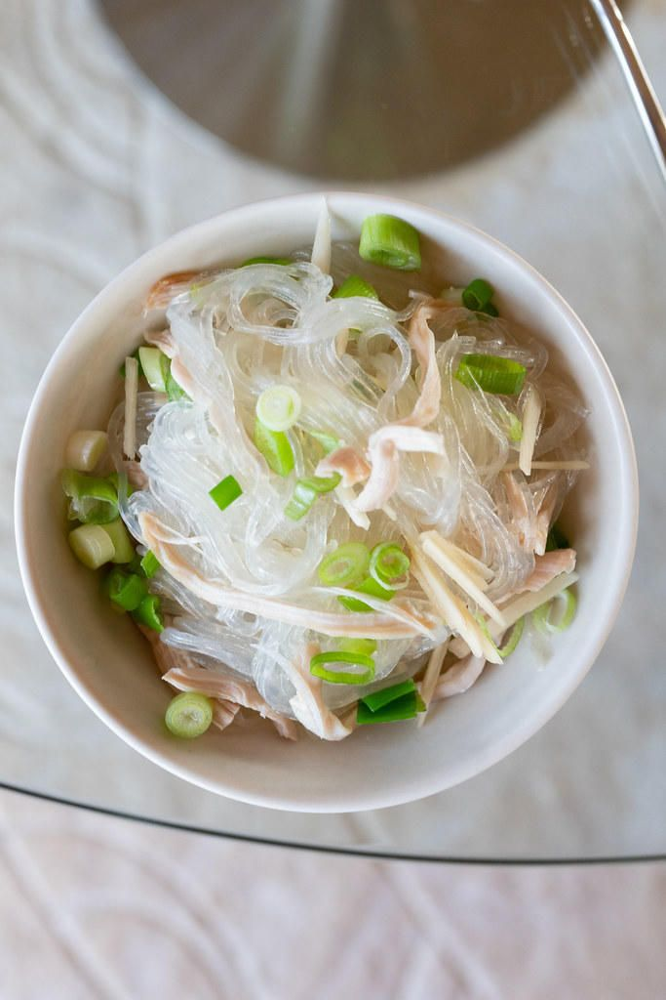

Chicken Long Rice

Description
Comforting and simple chicken noodle dish Hawaiian style. Served with or without soup with optional lomi lomi salmon topping.
Ingredients
- 32 oz chicken broth
- 3 tbsp soy sauce
- 2 cloves minced garlic
- 2 tbsp grated ginger
- 1 tsp sugar
- 4 chicken thighs
- 10.5 oz bean thread noodles
- 1/4 cup chopped green onions
Steps
- In a pot over medium heat, add in chicken broth, shoyu, sugar, garlic, ginger, and chicken thighs.
- Bring to a boil then reduce heat and cover pot. Simmer for 30 mins.
- Soak bean thread in bowl of water while chicken is simmering.
- Remove chicken after 30 mins and shred meat. Discard the skin and bones.
- Add shredded chicken into pot.
- Remove bean thread from bowl of water and add into pot.
- Stir and cook for about 5 mins until noddles turn transparent.
- Serve in a bowl with optional lomi lomi salmon and garnish with green onions.